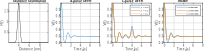

Generating dipolar signals¶
%======================================================================
% DeerAnalyis2
% Example: Generating dipolar signals
% How to generate dipolar signals corresponding to different experiments
%=======================================================================
clear,clc,clf
% Generate model distribution
%----------------------------------------------
nt = 200;
t = linspace(-0.2,6,nt); % us
r = time2dist(t); % nm
P = rd_onegaussian(r,[4,0.3]);
% Calculate 4-pulse DEER signal
%----------------------------------------------
V4pdeer = dipolarsignal(t,r,P,'ModDepth',0.5);
% Calculate 5-pulse DEER
%----------------------------------------------
%Simulate different artefact levels
V5pdeer1 = dipolarsignal(t,r,P,'ModDepth',0.5,'Interference',[0.3 max(t)/2]);
V5pdeer2 = dipolarsignal(t,r,P,'ModDepth',0.5,'Interference',[0.2 max(t)/2]);
V5pdeer3 = dipolarsignal(t,r,P,'ModDepth',0.5,'Interference',[0.1 max(t)/2]);
% Calculate RIDME signal
%----------------------------------------------
Tmix = 50; % mixing time, us
T1 = 88; % relaxation time, us
% Simulate different overtones
OverCoeff = overtones(1,Tmix,T1);
Vridme1 = dipolarsignal(t,r,P,'ModDepth',0.5,'Overtones',OverCoeff);
OverCoeff = overtones(2,Tmix,T1);
Vridme2 = dipolarsignal(t,r,P,'ModDepth',0.5,'Overtones',OverCoeff);
OverCoeff = overtones(3,Tmix,T1);
Vridme3 = dipolarsignal(t,r,P,'ModDepth',0.5,'Overtones',OverCoeff);
% Plotting
%----------------------------------------------
subplot(141)
plot(r,P,'k','LineWidth',1)
axis tight, box on, grid on
title('Distance Distribution')
xlabel('distance (nm)')
ylabel('P(r) (nm^{-1})')
subplot(142)
plot(t,V4pdeer,'LineWidth',1)
axis tight, box on, grid on
title('4-pulse DEER')
xlabel('time (\mus)')
ylabel('V(t)')
subplot(143)
plot(t,V5pdeer1,t,V5pdeer2,t,V5pdeer3,'LineWidth',1)
axis tight, box on, grid on
legend('\rho = 0.3','\rho = 0.2','\rho = 0.1')
title('5-pulse DEER')
xlabel('time (\mus)')
ylabel('V(t)')
subplot(144)
plot(t,Vridme1,t,Vridme2,t,Vridme3,'LineWidth',1)
axis tight, box on, grid on
legend('1 Overtone','2 Overtones','3 Overtones')
title('RIDME')
xlabel('time (\mus)')
ylabel('V(t)')
